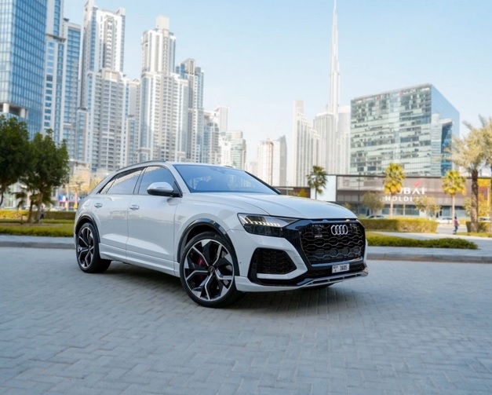
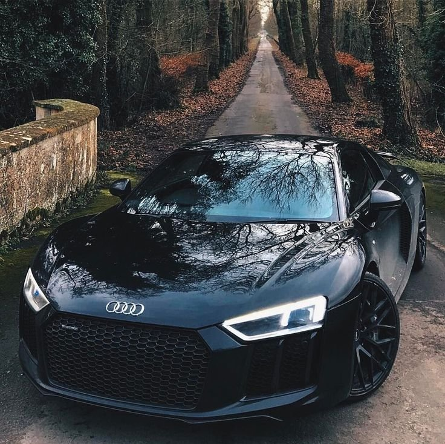

Audi AG ([ˈɑʊdɪ], audi в переводе с лат. — «слушай») — немецкая автомобилестроительная компания в составе концерна Volkswagen Group, специализирующаяся на выпуске автомобилей под маркой Audi. Штаб-квартира расположена в городе Ингольштадт (Германия). Девиз — Vorsprung durch Technik (с нем. — «Прогресс через технологии»). Объём производства в 2016 году составил около 1 903 259 автомобилей.
Всем известно, что главными конкурентами Audi на автомобильном рынке являются компании Mercedes-Benz и BMW, так называемая «Немецкая Тройка». Многие думают, что рекламная война началась с плаката BMW в 2006 году, где компания BMW «мило» поздравляла Audi с победой в конкурсе «Машина года»-2006 в Южной Африке. Но нет, всё началось ещё в далёких 80-х годах, когда компания Audi выпустили рекламный ролик, где Audi 200 накручивает восьмёрки вокруг Mercedes-Benz E-Klasse (W124) и BMW 5-серии (E28).
Буквально через год компания BMW выпустила ответный ролик, продемонстрировав свою новую модель BMW 5-серии (E34). В рекламном ролике BMW присутствует три автомобиля, все автомобили накрыты тремя полотнами. Первый автомобиль оказался BMW 5-серии, а остальные два автомобиля резко растворились и полотна, которыми они были накрыты упали на землю, это был намёк компаниям Audi и Mercedes-Benz. Компания Mercedes-Benz решила проигнорировать рекламы Audi и BMW, не отвечая им по сей день ничего. Рекламная война Audi и BMW продолжается до сих пор. Не так давно в рекламную войну вступил Lexus.